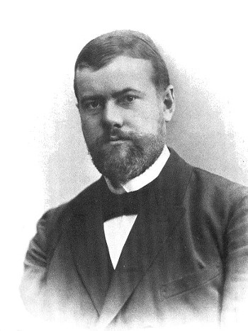

Karl Emil Maximilian Weber (pronúncia em alemão: ˈmaks ˈveːbɐ; Erfurt, 21 de abril de 1864 — Munique, 14 de junho de 1920) foi um intelectual, jurista e economista Alemão considerado um dos fundadores da Sociologia. Seu irmão foi o também famoso sociólogo e economista Alfred Weber. A esposa de Max Weber, Marianne Weber, biógrafa do marido, foi uma das alunas pioneiras na universidade alemã e integrava grupos feministas de seu tempo. É considerado um dos fundadores do estudo moderno da sociologia, mas sua influência também pode ser sentida na economia, na filosofia, no direito, na ciência política e na administração. Começou sua carreira acadêmica na Universidade Humboldt de Berlim e, posteriormente, trabalhou na Universidade de Freiburg, na Universidade de Heidelberg, na Universidade de Viena e na Universidade de Munique. Personagem influente na política alemã da época, foi consultor dos negociadores alemães no Tratado de Versalhes (1919) e da comissão encarregada de redigir a Constituição de Weimar. Grande parte de seu trabalho como pensador e estudioso foi reservado para o estudo do capitalismo e do chamado processo de racionalização e desencantamento do mundo. Mas seus estudos também deram contribuição importante para a economia. Sua obra mais famosa são os dois artigos que compõem A ética protestante e o espírito do capitalismo, com o qual começou suas reflexões sobre a sociologia da religião.[1] Weber argumentou que a religião era uma das razões não-exclusivas do porque as culturas do Ocidente e do Oriente se desenvolveram de formas diversas, e salientou a importância de algumas características específicas do protestantismo ascético, que levou ao nascimento do capitalismo, da burocracia e do estado racional e legal nos países ocidentais.
